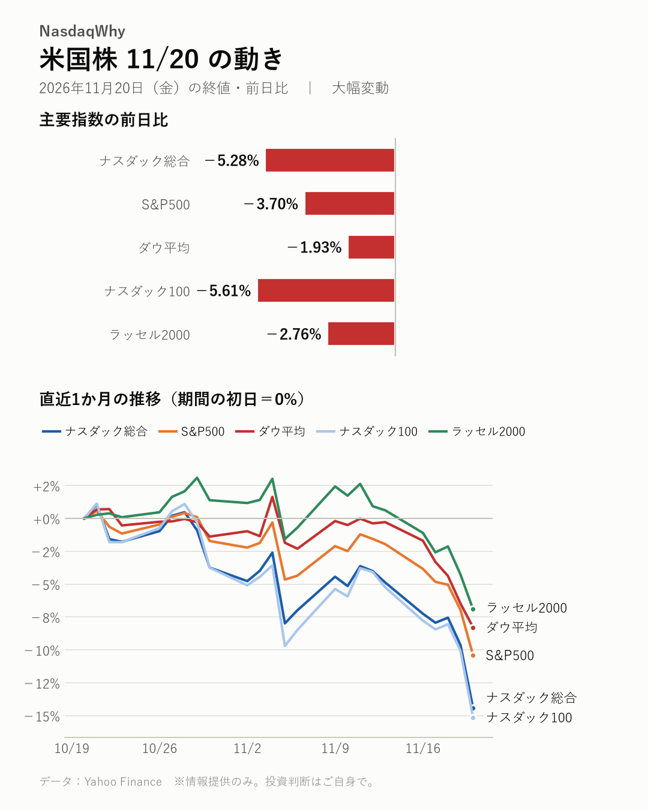
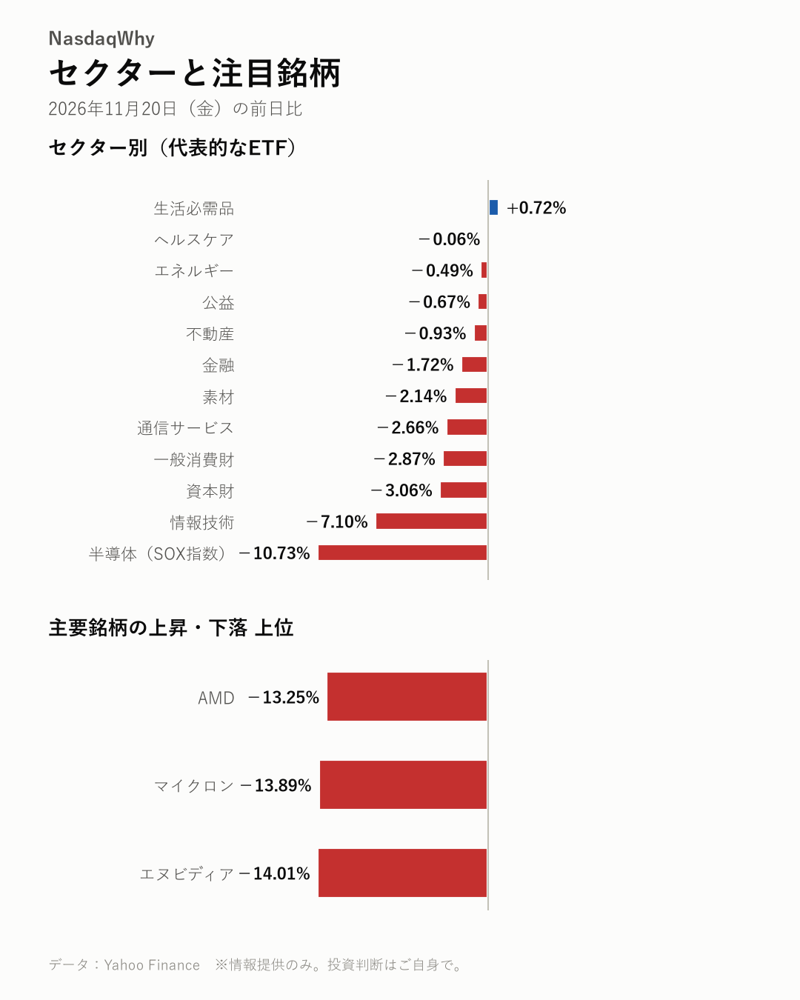

11/20の米国株：エヌビディア急落、AI半導体株はなぜ総崩れに？
2026年11月20日（金）の米国市場（日本時間の翌朝更新） ｜ 大幅変動
今日の疑問
エヌビディア急落、AI半導体株はなぜ総崩れに？
エヌビディアのCEO後任探しと当局の調査が重荷になり、アンソロピック上場後の反落も重なった。マイクロンはNAND価格の弱気予想、AMDは中国との関係を指摘されて売りが膨らんだ。売りが一時的な動揺か需要の変化かはまだ分からず、次はマイクロンの決算を確かめたい。

主要指数
| 名前 | 終値 | 前日比 | 騰落率 |
|---|---|---|---|
| ナスダック総合 | 22,617.73 | -1,261.47 | -5.28% |
| S&P500 | 6,910.39 | -265.44 | -3.70% |
| ダウ平均 | 48,147.33 | -949.73 | -1.93% |
| ナスダック100 | 25,028.98 | -1,488.07 | -5.61% |
| ラッセル2000 | 2,581.79 | -73.32 | -2.76% |
なぜ動いた？
- エヌビディアは-14.01%と急落した。CEOの後任探しと証券当局の調査が重荷になり、AI関連株全体に売りが広がった。（出典：FXLeaders、Investor's Business Daily、Yahoo Finance、CNBC）
- 前日はアンソロピックの上場を前に半導体株が買われた。上場後は一転して反落し、同社株も下げた。AI相場の勢いが鈍った。（出典：Yahoo Finance、Yahoo Finance、Yahoo Finance、MarketWatch、Quartz）
- 調査会社トレンドフォースが、先行きのNAND価格に弱気な見方を示した。マイクロンは-13.89%で、メモリー株が軒並み売られた。（出典：Yahoo Finance、Crypto Briefing、24/7 Wall St.）
- フォーブスによると、AMDの中国とのつながりを指摘する報告が出た。空売り筋の報告も重なり、株価は-13.25%。（出典：Forbes、Barron's）
深掘り：大きく動いた背景
AI関連株が全面安となり、ナスダック総合は-5.28%、半導体（SOX指数）は-10.73%と急落した。エヌビディアは-14.01%、マイクロンは-13.89%、AMDは-13.25%。売りはテスラやメタにも及んだ。 発端の一つはエヌビディアの経営をめぐる混乱だ。CEOの後任探しと証券当局の調査が重荷になった。同社の資金面のリスクが半導体株の上値を抑えるとの見方もアナリストから出ている。前日はアンソロピックの上場を前に半導体株が買われたが、取引開始後に反落した。この流れがこの日も続いた。 メモリー株には別の悪材料が重なった。調査会社トレンドフォースが先行きのNAND価格に弱気な見方を示した。サンディスクやウエスタンデジタルも売られた。AMDには中国とのつながりを指摘する報告が出て、取引開始前から下げた。 逆の見方もある。マイクロンの幹部はメモリーの品不足が長く続くと述べ、トレンドフォースもDRAM価格の上昇を見込む。バロンズはメモリー株を「割安すぎる」と評した。 まだ分からないのは、今回の売りが需要の変化によるものか、心理的な動揺によるものかだ。次はエヌビディアの経営体制の行方と、マイクロンの決算でのメモリー価格の説明を確かめたい。
セクター
半導体（SOX指数）は-10.73%、情報技術は-7.10%と下げが目立った。資本財や一般消費財も売られた。生活必需品は+0.72%と上昇し、ヘルスケアは小幅安にとどまった。
- 騰落率の高い順：生活必需品 +0.72%、ヘルスケア -0.06%、エネルギー -0.49%
- 騰落率の低い順：半導体（SOX指数） -10.73%、情報技術 -7.10%、資本財 -3.06%

注目銘柄
ブロードコムは-12.19%、テスラは-7.64%、メタは-5.93%。SpaceXは-7.69%で、融資元がAI半導体を担保とする宇宙利用に制限を求めた。ニュースケールなど原子力株の下げには明確な材料は見当たらない。
- 下落：エヌビディア（NVDA）-14.01%、マイクロン（MU）-13.89%、AMD（AMD）-13.25%
半導体トピック
- トレンドフォースがNAND価格の先行きに弱気な見方を示した（Yahoo Finance、Crypto Briefing）
- AI需要で基板（PCB）の世界的な供給不足が深刻になっている（digitimes）
- マイクロンがシンガポールのHBM新工場に最初の装置を入れた（digitimes）
関連市場
| 名前 | 終値 | 前日比 | 騰落率 |
|---|---|---|---|
| 米10年債利回り | 4.912% | -0.140pt | ― |
| ドル円 | 158.59 | -0.79 | -0.49% |
| 金先物 | 3,517.90 | -167.60 | -4.55% |
| 原油先物(WTI) | 83.69 | +0.48 | +0.58% |
| ビットコイン | 58,554.86 | -3,346.96 | -5.41% |
米10年債利回りは4.912%に低下した。ドル円は-0.49%と円高方向に振れた。金先物は-4.55%、ビットコインは-5.41%と下げ、原油先物(WTI)は+0.58%と上昇した。
今週の振り返り
- ナスダック総合：週間 -10.02%
- S&P500：週間 -8.61%
- ダウ平均：週間 -8.02%
- ナスダック100：週間 -10.43%
- ラッセル2000：週間 -7.48%
今週の米国株は大きく値を崩した。週間でナスダック総合は-10.02%、S&P500は-8.61%、ダウ平均は-8.02%。中小型株のラッセル2000も-7.48%だった。 売りの中心はAI半導体株だ。週の後半には、アンソロピックの上場を前に半導体株が買われる場面もあった。だが上場後は失速した。最終日にはエヌビディアの経営の混乱とメモリー価格の弱気予想が重なり、下げ幅が広がった。 ベンジンガは、半導体株の不振が歴史的な水準にあると指摘した。売りは日本や韓国の株式市場にも広がった。 来週以降もエヌビディアの経営体制をめぐる動きが焦点になる。来月のFOMCで金利の方向がどう示されるかも確かめたい。
今後の注目
- 12/9（水） FOMC（米連邦公開市場委員会）の金融政策発表（公式発表）
- エヌビディアのCEO後任探しと、証券当局による調査の行方（FXLeaders）
- マイクロンの次回決算発表と、メモリー価格の見通しの説明（Yahoo Finance、Yahoo Finance）
出典（見出し）
- FXLeaders：Nvidia Stock NVDA Risks Breakdown Below $140 Support as CEO Search and SEC Probe Weigh（記事）
- Investor's Business Daily：AI Stocks' Wild Ride Gets Bumpier As Nvidia Chaos, Blue Tsunami Spook Investors（記事）
- Yahoo Finance：Nvidia drops 12%, Broadcom and AMD extend declines as the AI trade melts down（記事）
- CNBC：Closing Bell panel assesses sharp selloff as Nvidia, AI stocks tumble（記事）
- Yahoo Finance：Nvidia, Broadcom, Micron stocks rise leading up to Anthropic's first trade（記事）
- Yahoo Finance：Nvidia, AMD, Micron Sink as Anthropic Closes 17% Above IPO Price（記事）
- Yahoo Finance：Nvidia, Broadcom, and Micron stocks decline as Anthropic goes public（記事）
- MarketWatch：Why Micron, Broadcom and other AI stocks gave up their gains Thursday（記事）
- Quartz：Anthropic stock slips after record IPO as AI selloff drags down Nvidia and AMD（記事）
- Yahoo Finance：SanDisk Tumbles 8% as TrendForce Turns Bearish on 2027 NAND Prices; Micron Falls 5%, SK Hynix Slides 4%（記事）
- Crypto Briefing：Micron stock slides as NAND price outlook darkens（記事）
- 24/7 Wall St.：Micron Stock Plunges 13% as Barron's Calls Memory Stocks 'Agonizingly Cheap'; Western Digital, SanDisk and Seagate Sink in AI Chip Selloff（記事）
- Forbes：Nvidia Rival AMD’s Stock Slides Sharply In Premarket After Report Alleges China Ties（記事）
- Barron's：AMD Stock Drops After Short Report Says It Isn’t an Nvidia Replacement（記事）
- digitimes：Global PCB shortage deepens as AI demand strains supplies, with relief unlikely before mid-2028（記事）
- digitimes：Micron moves first equipment into Singapore high-bandwidth memory plant, eyes 2027 production start（記事）
- Yahoo Finance：Micron Technology to Report Fiscal First Quarter Results on December 17, 2026（記事）
データ：Yahoo Finance
📝 note でも読めます（図つき・まとめ）：note.com/nasdaqwhy